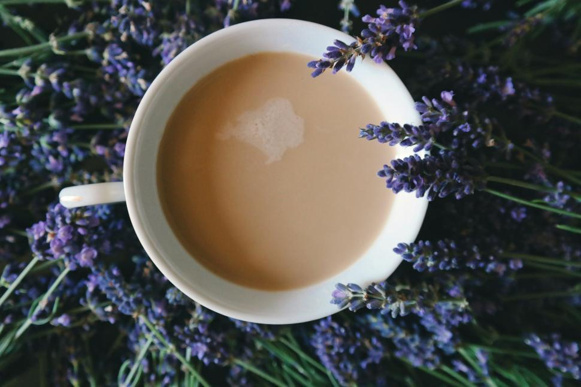

This recipe was picked up from a coffee shop I used to work at and tweaked at home for those who don't have a steaming wand, as well as preferring fresh syrup over store bought.
In the wild I like to order this drink at coffee stands as well, especially during a hard day at work. The Lavender reminds me of a time when my mom owned a Lavender farm in Oregon.
This drink has also been inserted into a story I'm writing that is under production as the protaganist's staple beverage.

Photo by: Brigitte Tohm, CCO Image https://freerangestock.com/licensing.php, via Free Range Stock
Conversion
=
Rate This Recipe
Homemade Lavender Syrup
(The Superior Syrup)
Making the lavender syrup at home is what brings this chai to a whole new level rather than using a store bought syrup. And the process couldn't become simpler than it is...
Skip this section if you bought syrup or if you already pocess.
Ingredients - Yields: 1 1/4 cups of syrup (1 Serving)
Much like the chai recipe, for the syrup you'll only need 3 ingredients:
Dried Lavender - 2 Tablespoons
Be careful not to use too many Lavender buds, as they can lead the syrup tasting soapy and overpowered. If this occurs, add equal parts water and sugar to delute for your preference.
1 Cup Granulated Sugar
1 Cup Water
Equipment
Stove
Small Pot
Tablespoon
Fine Mesh Strainer or Cheese Cloth
Glass Bottle w/Lid or Nozzle (May substitue with Mason Jar)
Funnel
Crafting the 'Lavender Potion'
In the small pot at medium-high heat, combine water, sugar and the dried lavender until simmering while stirring occasionally. Simmer for an additional 2 minutes after the sugar has dissolved.
Turn off heat and remove from burner. Allow to sit 20-60 minutes for the Lavender to infuse. While it's infusing, taste test at various points. Once it's to your liking, move onto step 3. (The longer it sits, the stronger the Lavender flavor.)
Strain the syrup into your Bottle or Jar using a fine mesh strainer or a cheese cloth. If straining into a bottle, be sure to use a funnel as well. Use immediately or throughout 2 weeks, Keep stored in the fridge.
Lavender Chai
Ingredients
Lavender Syrup - Can be store bought or Homemade. Lavender syrup recipe is provided below.
Chai Concentrate - My favorite brand to use is Black Scottie Chai. If you're cheap like me though, I know Trader Joes sells delicious powdered chai that comes in a can...
Any form of milk under the sun. - For a very rich creamy drink, stick to whole milk. I personally like to use oat or almond milk for this drink.
Equipment
Stove
Small Pot or Use other form of equipment to heat milk if you pocess.
Spoon to stir
Mug or Cup
Brewing the Cuppa
On the side, prep the mug with Chai concentrate and Lavender syrup: Cover the bottom of the cup with Lavender syrup.(Be sure to not use too much, we can add more later if needed.) If we're using Block Scottie Chai that has a pump nozzle, use only one pump. We want 2-3 Tablespoons worth of Chai concentrate.
On the stove in a small pot, heat your milk on medium-high heat. Stir occasionally until it's at a hot temperature without bringing it to a boil.
Once milk has finished heating, pour into prepped mug or cup and stir. Taste and add more Lavender or Chai until it's to your liking. Enjoy!